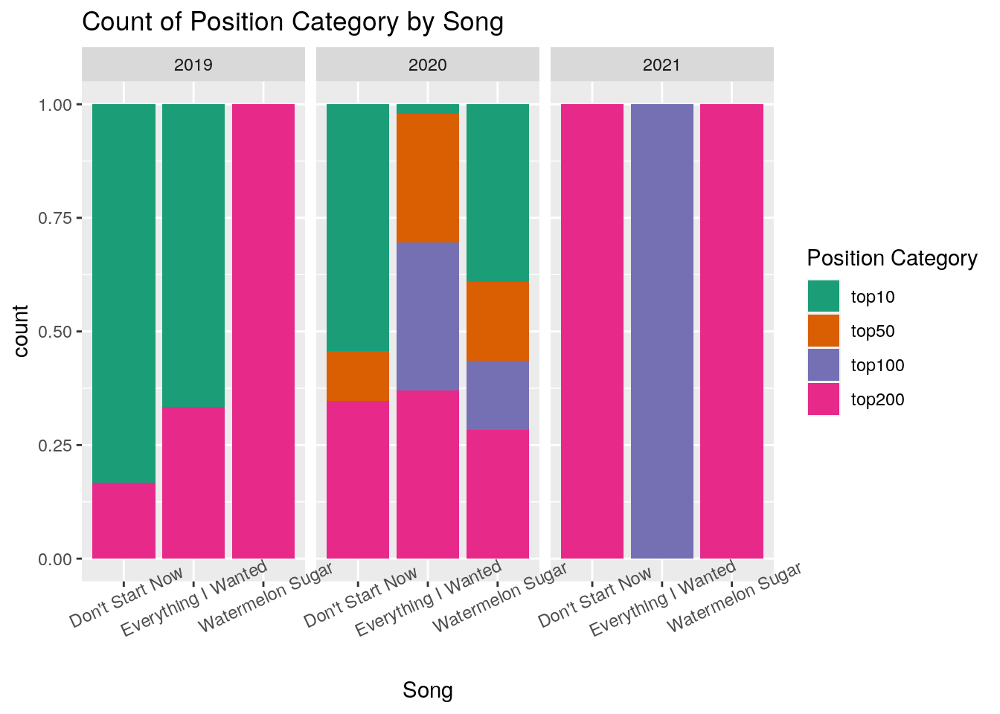

The dataset Streams contains the global and US streams by date for 3 Grammy performance songs: Watermelon Sugar-Harry Styles, Everything I Wanted-Billie Eilish, Don’t Start Now-Dua Lipa. This dataset was acquired from a website that contains Spotify streaming data on top songs (https://kworb.net/spotify/). This interested me, because I was curious to see how the number of streams compared since each was performed at the 2021 Grammy’s. The second data set, Positions, was acquired from the same location. It contains the position of each song on Spotify’s Top 200 Chart by date.
All 3 songs were released around the same time, so I expect them to peak at both streams and position around the same time. I also expect to see that all 3 songs increase in position and number of streams after the Grammy’s because the songs would have gained relevance again. I am interested to see which song was most popular and remained the most popular for longer.
library(dplyr)
library(tidyverse)
library(readxl)
Streams <- read_excel("Grammy Song Streams.xlsx")
library(readxl)
Positions <- read_excel("Grammy Song Positions.xlsx")
## joining data sets and removing NA
charts <- Streams %>% right_join(Positions, by = c("Date")) %>%
na.omit
glimpse(charts)## Rows: 57
## Columns: 10
## $ Date <dttm> 2019-11-21, 2019-11-28, 2019-12-05, 2019-12-12, …
## $ Global_streams.WS <dbl> 13067797, 15727628, 12448702, 13162182, 21814400,…
## $ US_streams.WS <dbl> 5465192, 5482936, 3862193, 4524384, 8252165, 5152…
## $ Global_streams.EIW <dbl> 40323676, 30455759, 27081940, 22700664, 22786542,…
## $ US_streams.EIW <dbl> 11794982, 7926800, 7130246, 6153403, 6023398, 559…
## $ Global_streams.DSN <dbl> 25716644, 25433949, 25181606, 22708996, 24730286,…
## $ US_streams.DSN <dbl> 4753717, 4370345, 4137710, 3903782, 4307806, 3973…
## $ Global_Position.WS <dbl> 21, 18, 26, 31, 14, 36, 22, 21, 29, 39, 40, 59, 6…
## $ Global_Position.DSN <dbl> 7, 6, 8, 9, 8, 13, 7, 8, 8, 10, 10, 5, 4, 6, 4, 4…
## $ Global_Position.EIW <dbl> 2, 3, 5, 10, 11, 16, 10, 11, 13, 13, 11, 11, 11, …I joined my data using a right join because there is only one shared variable and I didn’t need to remove any variables. There were 288 observations in Positions and 504 observations in Streams. In the joined dataset “charts”, there are 720 total observations. After omitting variables with NA, there are 570 observations
## untidying data using pivot_longer
chartslong <- charts %>% pivot_longer(c = contains("."), names_to = "category",
values_to = "value") %>% separate(category, into = c("chart",
"category", "song"))
glimpse(chartslong)## Rows: 513
## Columns: 5
## $ Date <dttm> 2019-11-21, 2019-11-21, 2019-11-21, 2019-11-21, 2019-11-21,…
## $ chart <chr> "Global", "US", "Global", "US", "Global", "US", "Global", "G…
## $ category <chr> "streams", "streams", "streams", "streams", "streams", "stre…
## $ song <chr> "WS", "WS", "EIW", "EIW", "DSN", "DSN", "WS", "DSN", "EIW", …
## $ value <dbl> 13067797, 5465192, 40323676, 11794982, 25716644, 4753717, 21…The data were tidy prior to uploading. I used pivot_longer to make the data into a single column to be able to categorize the number of streams into high, med, and low and categorize the chart position of the songs into top10, top50, top100, and top200 later.
## arranging Everying I wanted by highest global position
charts %>% arrange(Global_Position.EIW) %>% select("Date", "Global_streams.EIW",
"Global_Position.EIW")## # A tibble: 57 x 3
## Date Global_streams.EIW Global_Position.EIW
## <dttm> <dbl> <dbl>
## 1 2019-11-21 00:00:00 40323676 2
## 2 2019-11-28 00:00:00 30455759 3
## 3 2019-12-05 00:00:00 27081940 5
## 4 2019-12-12 00:00:00 22700664 10
## 5 2020-01-02 00:00:00 21828884 10
## 6 2019-12-19 00:00:00 22786542 11
## 7 2020-01-09 00:00:00 23713150 11
## 8 2020-01-30 00:00:00 26396743 11
## 9 2020-02-06 00:00:00 26024099 11
## 10 2020-02-13 00:00:00 25681970 11
## # … with 47 more rows## mean position of other songs when Watermelon Sugar is at
## it's peak position
charts %>% filter(Global_Position.WS == 4) %>% select("Global_Position.WS",
"Global_Position.EIW", "Global_Position.DSN") %>% summarise_if(is.numeric,
mean)## # A tibble: 1 x 3
## Global_Position.WS Global_Position.EIW Global_Position.DSN
## <dbl> <dbl> <dbl>
## 1 4 86.5 23.5## using mutate to create new categorical variables, position
## category and streams category
chartslong <- charts %>% pivot_longer(c = contains("."), names_to = "category",
values_to = "value") %>% mutate(streams_cat = case_when(value >
2e+07 ~ "high", value <= 2e+07 & 5e+06 <= value ~ "mid",
value < 5e+06 & 1e+06 <= value ~ "low")) %>% mutate(position_cat = case_when(value <
200 & 100 < value ~ "top200", value <= 100 & 50 < value ~
"top100", value <= 50 & 10 < value ~ "top50", value <= 10 ~
"top10"))
chartslong## # A tibble: 513 x 5
## Date category value streams_cat position_cat
## <dttm> <chr> <dbl> <chr> <chr>
## 1 2019-11-21 00:00:00 Global_streams.WS 13067797 mid <NA>
## 2 2019-11-21 00:00:00 US_streams.WS 5465192 mid <NA>
## 3 2019-11-21 00:00:00 Global_streams.EIW 40323676 high <NA>
## 4 2019-11-21 00:00:00 US_streams.EIW 11794982 mid <NA>
## 5 2019-11-21 00:00:00 Global_streams.DSN 25716644 high <NA>
## 6 2019-11-21 00:00:00 US_streams.DSN 4753717 low <NA>
## 7 2019-11-21 00:00:00 Global_Position.WS 21 <NA> top50
## 8 2019-11-21 00:00:00 Global_Position.DSN 7 <NA> top10
## 9 2019-11-21 00:00:00 Global_Position.EIW 2 <NA> top10
## 10 2019-11-28 00:00:00 Global_streams.WS 15727628 mid <NA>
## # … with 503 more rows## using mutate to create a variable that is the percent of
## total streams that are from the US
charts %>% mutate(percent_US = (US_streams.DSN + US_streams.EIW +
US_streams.WS)/(Global_streams.DSN + Global_streams.EIW +
Global_streams.WS) * 100)## # A tibble: 57 x 11
## Date Global_streams.… US_streams.WS Global_streams.…
## <dttm> <dbl> <dbl> <dbl>
## 1 2019-11-21 00:00:00 13067797 5465192 40323676
## 2 2019-11-28 00:00:00 15727628 5482936 30455759
## 3 2019-12-05 00:00:00 12448702 3862193 27081940
## 4 2019-12-12 00:00:00 13162182 4524384 22700664
## 5 2019-12-19 00:00:00 21814400 8252165 22786542
## 6 2019-12-26 00:00:00 15195825 5152495 21586527
## 7 2020-01-02 00:00:00 14548153 4811184 21828884
## 8 2020-01-09 00:00:00 15046960 4793358 23713150
## 9 2020-01-16 00:00:00 14108205 4418408 23297771
## 10 2020-01-23 00:00:00 12650858 3949802 21786149
## # … with 47 more rows, and 7 more variables: US_streams.EIW <dbl>,
## # Global_streams.DSN <dbl>, US_streams.DSN <dbl>, Global_Position.WS <dbl>,
## # Global_Position.DSN <dbl>, Global_Position.EIW <dbl>, percent_US <dbl>## grouping by year to summarize the number of total streams
## of Watermelon Sugar
charts1 <- charts %>% separate(Date, into = c("year", "month",
"day"))
charts1 %>% group_by(year) %>% summarize(WS_streams = sum(Global_streams.WS))## # A tibble: 3 x 2
## year WS_streams
## <chr> <dbl>
## 1 2019 91416534
## 2 2020 752624056
## 3 2021 64787707## grouping by streams and position category to get the count
## of each
chartslong %>% group_by(streams_cat, position_cat) %>% summarize(count = n())## # A tibble: 7 x 3
## # Groups: streams_cat [4]
## streams_cat position_cat count
## <chr> <chr> <int>
## 1 high <NA> 65
## 2 low <NA> 125
## 3 mid <NA> 152
## 4 <NA> top10 53
## 5 <NA> top100 26
## 6 <NA> top200 27
## 7 <NA> top50 65## The highest position on global charts for each song
charts %>% summarize_if(is.numeric, min) %>% select("Global_Position.WS",
"Global_Position.DSN", "Global_Position.EIW")## # A tibble: 1 x 3
## Global_Position.WS Global_Position.DSN Global_Position.EIW
## <dbl> <dbl> <dbl>
## 1 4 2 2## summary of streams all three songs
chartslong %>% filter(category == "US_streams.WS" | category ==
"US_streams.EIW" | category == "US_streams.DSN") %>% summarize(mean = mean(value),
sd = sd(value), count = n(), se = sd/sqrt(count), variation = var(value),
median = median(value))## # A tibble: 1 x 6
## mean sd count se variation median
## <dbl> <dbl> <int> <dbl> <dbl> <dbl>
## 1 3707309. 1891235. 171 144626. 3.58e12 3273961## matrix
charts %>% select(is.numeric) %>% cor()## Global_streams.WS US_streams.WS Global_streams.EIW
## Global_streams.WS 1.0000000 0.826428494 -0.38168678
## US_streams.WS 0.8264285 1.000000000 0.01730623
## Global_streams.EIW -0.3816868 0.017306229 1.00000000
## US_streams.EIW -0.3638959 0.048300261 0.99502127
## Global_streams.DSN -0.6517936 -0.306293097 0.69635633
## US_streams.DSN -0.6917776 -0.351074598 0.66869774
## Global_Position.WS -0.8424157 -0.762265809 0.23064792
## Global_Position.DSN 0.4578963 0.021715034 -0.61079660
## Global_Position.EIW 0.4608811 0.004204046 -0.84105969
## US_streams.EIW Global_streams.DSN US_streams.DSN
## Global_streams.WS -0.36389589 -0.6517936 -0.6917776
## US_streams.WS 0.04830026 -0.3062931 -0.3510746
## Global_streams.EIW 0.99502127 0.6963563 0.6686977
## US_streams.EIW 1.00000000 0.6632508 0.6388897
## Global_streams.DSN 0.66325079 1.0000000 0.9910112
## US_streams.DSN 0.63888966 0.9910112 1.0000000
## Global_Position.WS 0.19999238 0.7226471 0.7408585
## Global_Position.DSN -0.60012476 -0.8862738 -0.8684345
## Global_Position.EIW -0.82702233 -0.8976685 -0.8711059
## Global_Position.WS Global_Position.DSN Global_Position.EIW
## Global_streams.WS -0.8424157 0.45789632 0.460881135
## US_streams.WS -0.7622658 0.02171503 0.004204046
## Global_streams.EIW 0.2306479 -0.61079660 -0.841059689
## US_streams.EIW 0.1999924 -0.60012476 -0.827022334
## Global_streams.DSN 0.7226471 -0.88627377 -0.897668534
## US_streams.DSN 0.7408585 -0.86843452 -0.871105942
## Global_Position.WS 1.0000000 -0.52969532 -0.469673275
## Global_Position.DSN -0.5296953 1.00000000 0.894026762
## Global_Position.EIW -0.4696733 0.89402676 1.000000000One interesting finding is that when the Global position of Everything I wanted is higher (closer to 1), the streams are usually greater than at lower positions; however not always. This makes sense because streams would need to decline before the position lowered, allowing for days when the song had fewer streams at a higher position than a lower one. Another finding is that when the global position for watermelon sugar was filtered by its top position, 4, the other songs were located at spots further down on the charts, not even within the top 10.
The Watermelon Sugar streams were grouped by year and summarized by the sum of the streams in that year. Most streams occurred in 2020, which is logical because the song was released late in 2019 and there have only been a few months in 2021. In addition, the data were also grouped by streaming and position category and summarized by the number of days the 3 songs spent in each of the two categories. To get the streaming and position categories, I mutated the numerical variables to create categorical variables, e.g. Top10 is any position a or above 10 on the charts.
## finding the goodness of fit and number of clusters
library(cluster)
pam_dat <- charts %>% select(-Date)
sil_width <- vector()
for (i in 2:10) {
pam_fit <- pam(pam_dat, k = i)
sil_width[i] <- pam_fit$silinfo$avg.width
}
ggplot() + geom_line(aes(x = 1:10, y = sil_width)) + scale_x_continuous(name = "k",
breaks = 1:10)## units for graphs
addUnits <- function(n) {
labels <- ifelse(n < 1000, n, ifelse(n < 1e+06, paste0(round(n/1000),
"k"), ifelse(n < 1e+09, paste0(round(n/1e+06), "M"))))
return(labels)
}
## scaling data and applying k
pam1 <- pam_dat %>% scale() %>% pam(k = 3)
pam1## Medoids:
## ID Global_streams.WS US_streams.WS Global_streams.EIW US_streams.EIW
## [1,] 8 -0.1213525 0.4695692 1.31953233 1.25746844
## [2,] 18 -1.2621094 -1.2402709 0.09472612 -0.01917254
## [3,] 44 1.1278442 0.3384874 -0.76155951 -0.76279983
## Global_streams.DSN US_streams.DSN Global_Position.WS Global_Position.DSN
## [1,] 0.8063292 0.8595538 -0.4266729 -0.7258366
## [2,] 1.0133658 0.9869549 1.8112312 -0.9291422
## [3,] -1.1206643 -1.1337999 -0.8041507 0.9514345
## Global_Position.EIW
## [1,] -1.1781842
## [2,] -0.5970029
## [3,] 0.8860114
## Clustering vector:
## [1] 1 1 1 1 1 1 1 1 1 1 1 1 1 2 2 2 2 2 2 2 2 2 2 2 2 2 1 3 3 3 3 3 3 3 3 3 3 3
## [39] 3 3 3 3 3 3 3 3 3 3 3 3 3 3 3 3 3 3 3
## Objective function:
## build swap
## 1.667235 1.453233
##
## Available components:
## [1] "medoids" "id.med" "clustering" "objective" "isolation"
## [6] "clusinfo" "silinfo" "diss" "call" "data"pamclust <- pam_dat %>% mutate(cluster = as.factor(pam1$clustering))
pamclust %>% ggplot(aes(Global_Position.WS, Global_streams.WS,
color = cluster)) + geom_point() + scale_y_continuous(labels = addUnits) +
xlab("Global Position") + ylab("Global Streams") + ggtitle("Cluster Plot of Watermelon Sugar by Streams and Position")## cluster summary
pamclust %>% group_by(cluster) %>% summarize_if(is.numeric, mean,
na.rm = T)## # A tibble: 3 x 10
## cluster Global_streams.… US_streams.WS Global_streams.… US_streams.EIW
## <fct> <dbl> <dbl> <dbl> <dbl>
## 1 1 13694358. 4608152. 24445802. 6493461.
## 2 2 6745782. 2173695. 13752838. 3590937.
## 3 3 20980404. 4589396. 6536571. 1832865.
## # … with 5 more variables: Global_streams.DSN <dbl>, US_streams.DSN <dbl>,
## # Global_Position.WS <dbl>, Global_Position.DSN <dbl>,
## # Global_Position.EIW <dbl>## visualizing clusters
library(plotly)
pamclust %>% plot_ly(x = ~Global_Position.WS, y = ~Global_streams.WS,
z = ~US_streams.WS, color = ~cluster, type = "scatter3d",
mode = "markers")library(GGally)
ggpairs(pamclust, columns = 1:4, aes(color = cluster)) + theme(axis.text.x = element_text(angle = 45)) +
scale_y_continuous(labels = addUnits) + scale_x_continuous(labels = addUnits)I started by excluding Date from my dataset because it isn’t a numerical variable. I then found the average silhouette width to find the best number of clusters to use. The average silhouette width is 0.56 at 2 clusters, which means a reasonable structure has been found. However, I went ahead and used 3 clusters, sil width of 0.52 because it looked better on the visuals and was still a reasonable structure. Using k=3, the dataset was scaled and plotted by 3 clusters.
The green cluster, 2, is of low global position ranging from 60 to 175 and has less than 10 M streams. This cluster doesn’t overlap with the others. The red cluster, 1, is majorly overlapping with the blue cluster, with a few points by the green cluster. These points are roughly between position 15 and 35 on the chart and have around 10 to 15 M streams. The blue cluster, 3, has the highest streams, around 15 to 30 M, but has lower and similar positions to the red cluster. The points in clusters 2 and 3 are closer to each other than they are between other clusters. However, this cluster plot could have also been between 2 clusters instead of 3, since there are 2 more distinct groups.
The 3D plot depicts the global streams of watermelon sugar by US streams and global position. The greater the global streams, the greater the US streams and the lower the position. The pair plot shows that the highest correlation of 0.995 was between the global streams and US streams of Everything I Wanted. All three clusters show statistical significance. The lowest correlation, 0.017, was between the global streams of Everything I Wanted and the US streams of Watermelon Sugar.
library(ggplot2)
## heatmap
charts %>% select_if(is.numeric) %>% cor %>% as.data.frame %>%
rownames_to_column %>% pivot_longer(-1) %>% ggplot(aes(rowname,
name, fill = value)) + geom_tile() + geom_text(aes(label = round(value,
2))) + xlab("") + ylab("") + coord_fixed() + ggtitle("Correlation Heatmap") +
theme(axis.text.x = element_text(angle = -90, size = 10)) +
scale_fill_gradient2(low = "yellow", mid = "orange", high = "red")## Graph2
ggplot(charts, aes(Date, Global_streams.WS)) + geom_line(color = "cyan") +
geom_point(size = 3, aes(color = Global_Position.WS)) + theme_minimal() +
ggtitle("Watermelon Sugar Streams by Date") + ylab("Streams") +
xlab("Date") + labs(colour = "Positions") + theme(axis.text.x = element_text(angle = 45)) +
scale_x_datetime(date_breaks = "1 month") + scale_y_continuous(labels = addUnits)## Graph3
song <- chartslong %>% filter(category == "Global_Position.EIW" |
category == "Global_Position.WS" | category == "Global_Position.DSN") %>%
mutate(category = recode(category, Global_Position.EIW = "Everything I Wanted ",
Global_Position.WS = "Watermelon Sugar", Global_Position.DSN = "Don't Start Now")) %>%
separate(Date, into = c("year", "month", "day"))
ggplot(song, aes(x = category, fill = position_cat)) + geom_bar(position = "fill") +
xlab("Song") + ggtitle("Count of Position Category by Song") +
scale_fill_brewer(palette = "Dark2", name = "Position Category",
labels = c("top10", "top50", "top100", "top200")) + facet_wrap(~year) +
theme(axis.text.x = element_text(angle = 25))
The charts above compare three Grammy performance songs by streams, position, or both. Graph 1 is a correlation heatmap, correlating global streams, US streams and Global position of each song. One interesting thing is that there is a correlation of 1 between the US streams and the global streams of everything I wanted. There is a negative correlation between streams and position because the more streams lead to a position of a lower number, e.g. 1, even though that is a higher position on the chart.
Graph 2 depicts the streams of Watermelon Sugar by date, colored by position. The lighter blue dots show positions lower on the chart and darker dots show higher positions on the chart. The number of global streams peaked around August 2020, then declined. When the global streams are higher, the position is lower (lower position = higher on the chart). Streaming of Watermelon Sugar increased dramatically after 2020-05, which makes sense because that was the month the music video was released.
Graph 3 shows the proportion of each position category for each song by year. Don’t Start Now had the largest portion of top 10 compared to the other two. In 2019, Don’t Start Now and Everything I wanted were mostly in the top 10. Watermelon Sugar reached top 10 in 2020, and by 2021 it fell to top 200. I expected all three songs to increase at least to the top 100 following the Grammy’s performance, but this wasn’t the case. Only Everything I wanted re-entered the top 100.
Note that the echo = FALSE parameter was added to the code chunk to prevent printing of the R code that generated the plot.